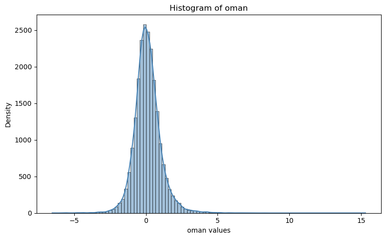
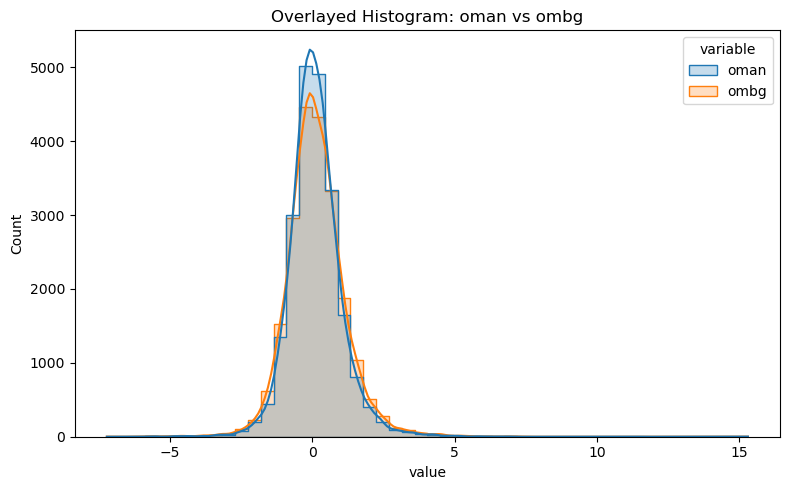
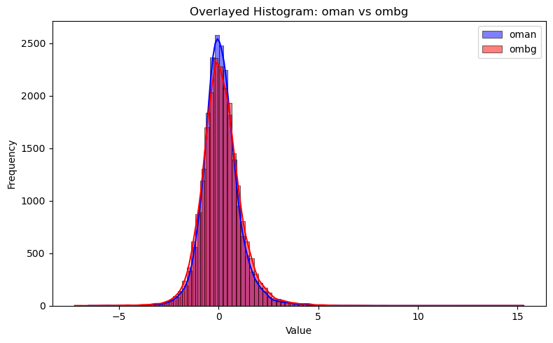
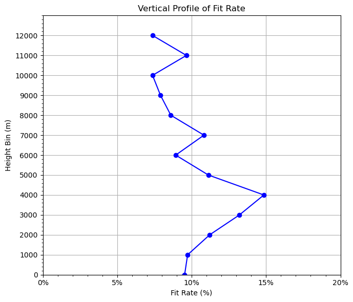

obs exploring#
House keeping and load modules#
%%time
# autoload external python modules if they changed
%load_ext autoreload
%autoreload 2
import os, sys
pyDAmonitor_ROOT=os.getenv("pyDAmonitor_ROOT")
if pyDAmonitor_ROOT is None:
print("!!! pyDAmonitor_ROOT is NOT set. Run `source ush/load_pyDAmonitor.sh`")
else:
print(f"pyDAmonitor_ROOT={pyDAmonitor_ROOT}\n")
sys.path.insert(0, pyDAmonitor_ROOT)
import seaborn as sns # seaborn handles NaN values automatically
import matplotlib.pyplot as plt
import pandas as pd
import numpy as np
from DAmonitor.base import query_dataset, query_data, to_dataframe
from DAmonitor.obs import obsSpace, fit_rate
pyDAmonitor_ROOT=/autofs/ncrc-svm1_home2/Guoqing.Ge/pyDAmonitor
CPU times: user 14.9 s, sys: 192 ms, total: 15.1 s
Wall time: 925 ms
load ioda data (ioda obs files, or jedi output ioda file (i.e. jdiag files) )#
ioda_file = f"{pyDAmonitor_ROOT}/data/samples/mpasjedi/jdiag_aircar_t133.nc"
obs_t133 = obsSpace(ioda_file)
examine data and convert to dataframe#
#query_dataset(obs_t133.dataset)
query_data(obs_t133.t)
# np.set_printoptions(threshold=np.inf) # print out all array values
# print(t133.t.longitude)
df = to_dataframe(obs_t133.t)
df
EffectiveError0, EffectiveError1, EffectiveError2, EffectiveQC0, EffectiveQC1, EffectiveQC2, stationIdentification, aircraftFlightPhase, timeOffset, prepbufrDataLvlCat, longitude, stationElevation, latitude, prepbufrReportType, pressure, dateTime, height, dumpReportType, aircraftFlightNumber, ObsBias0, ObsBias1, ObsBias2, ObsError, ObsType, ObsValue, QualityMarker, TempObsErrorData, hofx0, hofx1, hofx2, innov1, oman, ombg,
| EffectiveError0 | EffectiveError1 | EffectiveError2 | EffectiveQC0 | EffectiveQC1 | EffectiveQC2 | stationIdentification | aircraftFlightPhase | timeOffset | prepbufrDataLvlCat | ... | ObsType | ObsValue | QualityMarker | TempObsErrorData | hofx0 | hofx1 | hofx2 | innov1 | oman | ombg | |
|---|---|---|---|---|---|---|---|---|---|---|---|---|---|---|---|---|---|---|---|---|---|
| 0 | NaN | NaN | NaN | 12 | 12 | 12 | EHDRETBA | 3 | -3576.996094 | 6 | ... | 133 | 218.149994 | 1 | NaN | NaN | NaN | NaN | NaN | NaN | NaN |
| 1 | NaN | NaN | NaN | 12 | 12 | 12 | 01CBZMBA | 5 | -3538.007812 | 6 | ... | 133 | 223.149994 | 1 | NaN | NaN | NaN | NaN | NaN | NaN | NaN |
| 2 | NaN | NaN | NaN | 12 | 12 | 12 | HXAWUUZA | 5 | -3480.011963 | 6 | ... | 133 | 250.449997 | 1 | NaN | NaN | NaN | NaN | NaN | NaN | NaN |
| 3 | 0.898347 | 0.898347 | 0.898347 | 0 | 0 | 0 | 3DERYTRA | 5 | -3321.000000 | 6 | ... | 133 | 221.149994 | 1 | 0.898347 | 222.235840 | 222.114044 | 222.116272 | -0.964054 | -0.966278 | -1.085845 |
| 4 | 0.771346 | 0.771346 | 0.771346 | 0 | 0 | 0 | 2L3LZ2JA | 6 | -3600.000000 | 6 | ... | 133 | 243.849991 | 1 | 0.771346 | 243.868774 | 243.840607 | 243.840988 | 0.009377 | 0.008997 | -0.018776 |
| ... | ... | ... | ... | ... | ... | ... | ... | ... | ... | ... | ... | ... | ... | ... | ... | ... | ... | ... | ... | ... | ... |
| 24786 | 0.895735 | 0.895735 | 0.895735 | 0 | 0 | 0 | AKCGXMRA | 5 | 1019.987976 | 6 | ... | 133 | 286.750000 | 1 | 0.895735 | 286.453949 | 286.552582 | 286.553101 | 0.197418 | 0.196910 | 0.296038 |
| 24787 | 0.893082 | 0.893082 | 0.893082 | 0 | 0 | 0 | AKCGXMRA | 5 | 1019.987976 | 6 | ... | 133 | 286.250000 | 1 | 0.893082 | 286.191376 | 286.297882 | 286.298462 | -0.047886 | -0.048451 | 0.058616 |
| 24788 | 0.911898 | 0.911898 | 0.911898 | 0 | 0 | 0 | CGCQOHZA | 5 | 1041.011963 | 6 | ... | 133 | 224.149994 | 1 | 0.911898 | 224.379501 | 224.313446 | 224.313843 | -0.163460 | -0.163844 | -0.229515 |
| 24789 | 0.884290 | 0.884290 | 0.884290 | 0 | 0 | 0 | ESL2MKBA | 5 | 1155.996094 | 6 | ... | 133 | 222.149994 | 1 | 0.884290 | 222.434891 | 222.327011 | 222.326950 | -0.177012 | -0.176951 | -0.284893 |
| 24790 | 0.911898 | 0.911898 | 0.911898 | 0 | 0 | 0 | CGCQOHZA | 5 | 1199.988037 | 6 | ... | 133 | 224.149994 | 1 | 0.911898 | 224.695724 | 224.631851 | 224.632080 | -0.481862 | -0.482081 | -0.545737 |
24791 rows × 33 columns
Histograms#
example 1#
plt.figure(figsize=(8, 5))
#sns.histplot(df["oman"], bins=50, kde=True, color="steelblue")
sns.histplot(obs_t133.t.oman, bins=100, kde=True, color="steelblue")
plt.title("Histogram of oman")
plt.xlabel("oman values")
plt.ylabel("Density")
plt.tight_layout()
plt.show()

example 2#
# Melt into long format
df_long = df[["oman", "ombg"]].melt(var_name="variable", value_name="value")
plt.figure(figsize=(8, 5))
sns.histplot(data=df_long, x="value", hue="variable", bins=50, kde=True, element="step", stat="count")
plt.title("Overlayed Histogram: oman vs ombg")
plt.tight_layout()
plt.show()

example 3#
plt.figure(figsize=(8, 5))
sns.histplot(df["oman"], bins=100, kde=True, color="blue", label="oman", multiple="layer")
sns.histplot(df["ombg"], bins=100, kde=True, color="red", label="ombg", multiple="layer")
plt.title("Overlayed Histogram: oman vs ombg")
plt.xlabel("Value")
plt.ylabel("Frequency")
plt.legend()
plt.tight_layout()
plt.show()

fit rate and plotting#
# 1. Filter valid data (both 'oman' and 'ombg' are not NaN)
valid_df = df[df["oman"].notna() & df["ombg"].notna()].copy()
valid_df = valid_df.dropna(subset=["height"]) # removes any rows in valid_df where height is missing (NaN)
print(valid_df[valid_df["height"] < 0]["height"]) # negative height
2542 -6
2968 -38
3030 -6
4001 -12
6356 -21
7649 -37
8558 -9
8819 -18
8891 -9
8892 -21
10123 -9
10124 -24
10243 -15
10338 -3
10339 -15
11118 -21
11612 -12
12105 -16
12235 -6
13227 -15
14858 -6
14859 -18
15349 -12
15368 -16
15618 -15
17090 -1
17870 -18
18361 -27
18362 -76
19575 -12
19996 -12
21057 -1
22412 -15
22413 -15
22463 -12
23919 -9
24647 -40
Name: height, dtype: int32
dz = 1000
grouped = fit_rate(obs_t133.t, dz=dz)
# 5. Plot vertical profile of fit_rate vs height
plt.figure(figsize=(7, 6))
plt.plot(grouped["fit_rate"], grouped["height_bin"], marker="o", color="blue")
# plt.axvline(x=0, color="gray", linestyle="--") # ax vertical line
plt.xlabel("Fit Rate (%)") # label change
plt.gca().xaxis.set_major_formatter(plt.FuncFormatter(lambda x, _: f'{x*100:.0f}%')) # format as %
plt.ylabel("Height Bin (m)")
plt.title("Vertical Profile of Fit Rate")
# Fine-tune ticks
plt.xticks(np.arange(0, 0.25, 0.05)) #, fontsize=12)
plt.yticks(np.arange(0, 13000, dz)) #, , fontsize=12)
# Add minor ticks
from matplotlib.ticker import AutoMinorLocator
plt.gca().xaxis.set_minor_locator(AutoMinorLocator())
plt.gca().yaxis.set_minor_locator(AutoMinorLocator())
# plt.grid(which='both', linestyle='--', linewidth=0.5)
plt.grid(True)
plt.ylim(0, 13000) # set y-axis from 0 (bottom) to 13,000 (top)
plt.tight_layout()
plt.show()
OMA: bias=0.1127 rms=0.9431
OMB: bias=0.1390 rms=1.0462
Overall fit_rate: 9.8576%
0, -1000, 1.7179, 1.7704, 2.9680%
1, 0, 1.3425, 1.4839, 9.5256%
2, 1000, 0.8929, 0.9891, 9.7274%
3, 2000, 0.9511, 1.0712, 11.2078%
4, 3000, 0.8140, 0.9379, 13.2102%
5, 4000, 0.7072, 0.8306, 14.8529%
6, 5000, 0.7251, 0.8159, 11.1235%
7, 6000, 0.7037, 0.7727, 8.9264%
8, 7000, 0.7456, 0.8361, 10.8245%
9, 8000, 0.7729, 0.8456, 8.5992%
10, 9000, 0.7673, 0.8331, 7.9049%
11, 10000, 0.8056, 0.8697, 7.3711%
12, 11000, 1.1992, 1.3272, 9.6471%
13, 12000, 1.3538, 1.4615, 7.3744%

print(grouped["height_bin"])
0 -1000
1 0
2 1000
3 2000
4 3000
5 4000
6 5000
7 6000
8 7000
9 8000
10 9000
11 10000
12 11000
13 12000
Name: height_bin, dtype: int32